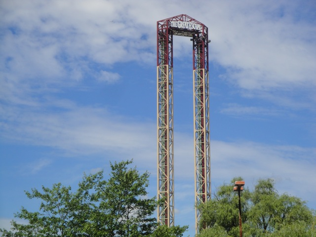
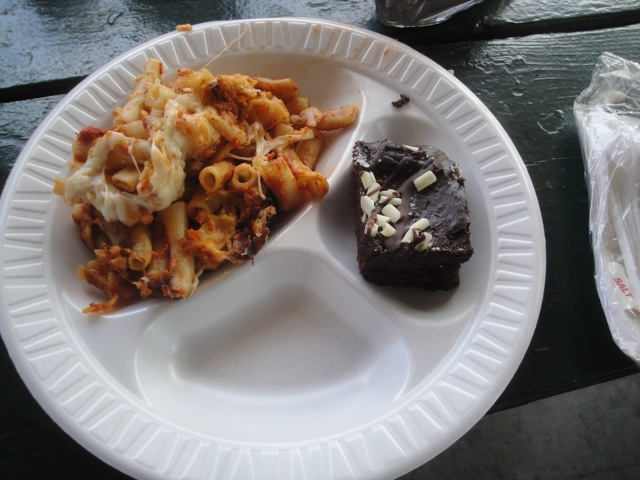
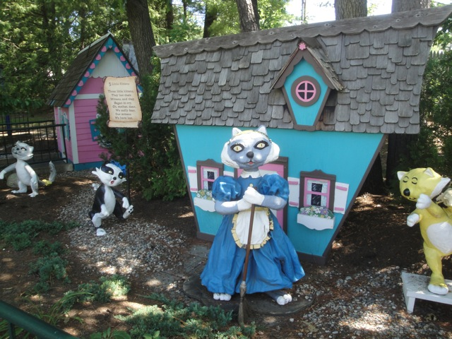

Great Escape is an intersting little park and the last thing I think of when Six Flags comes to mind. I wasn't expecting much since it's one of the red-headed stepchilds of the Six Flags chain, but not only did they have one of my favorite wooden coasters, but they also had a lot of charm and it was a really nice park. I later returned to this park on the Northeast Trip. and it still had all of the charm that the park had before and Comet was still great. They had many different rides for people of all ages. There was a certain charm to it that I never found at any other park. It had a sort of campground feel to it. However, with the exception of Comet, none of the coasters are anything to write home about. But then again, this felt more like a local home town park than a big extreme park. It had many aspects that you would never find in a Six Flags park such as Storybook Areas, petting zoos, and much more stuff like that. I would definetly recommend you visit Great Escape, as they are a very charming park, home to one really freaking amazing wooden coaster.
Here are the reviews of all the Flat Rides at the Great Escape. Now the Great Escape has many flat rides. However, without a doubt, the star flat ride would definetly be Sasquatch. These are the two S&S Towers that came from Six Flags New Orleans. One tower is a space shot, the other is a turbo drop. And for S&S Towers, they both run really good programs. So that's great for the Great Escape. I also rode their Music Express, which while it didn't run a fantastic program, it was still a lot of fun. We also rode Trabant. This is basically an old fashioned version of Wipeout at Knotts Berry Farm. So it's a fun ride to enjoy. The final flat ride that I rode was the Ferris Wheel to get some nice Great Escape shots as well as a couple good shots of Comet and the Alpine Bobsled. Other flat rides that the Great Escape had were a scrambler, a pirate ship, a condor, some chairswings, a car ride, and a carousel. So while the Great Escape doesn't have any extreme flat rides, it's a nice quaint little collection of flat rides.

Check out these S&S Towers. They're really fun.
Water Rides
While I never rode any water rides at the Great Escape, I can tell you what I saw. From what I saw, they had one water ride, which was just a standard River Rapids ride. I only saw one part of the ride, so I can only tell you so much about it. But I do know that you can soak people on it. So that'll be some great entertainment for when I go back to the Great Escape.
Water Park
Yep. The Great Escape does indeed have a water park included with admission. And though I didn't spend any time in it at all, I must admit that it does look like fun. I'll have to give it a spin next time and see just how it is (Sorry, I don't have much to say here).
Dining
The Great Escape actually had some really good food as during our lunch, they not only served us typical stuff like hamburgers, hot dogs, and so forth, but they also had some really cool stuff such as Baked Pasta. And that is just awesome. I'm not sure if they serve it within the park, but I sure hope so. Because that would truely be awesome.

We at Incrediblecoasters always approve of Baked Pasta. =)
Theming and Other Attractions
Here are the reviews of all the other stuff at the Great Escape. For theming, the park has a very woodsy atmosphere and a campground feel to it. But as far as actual theming goes, there's a lot more than your typical Six Flags Park. Particuarly, they have Storybook Land, which is pretty cool. They have a lot of random statues from storybook characters, which definetly adds to the charm of the park. They've also got a zoo area which includes turtles. And they've got a water park. So yeah. There's quite a lot to do at the Great Escape.

Here's a little peice of Storybook U.S.A
In Conclusion
The Great Escape is a nice little park to visit if you are ever driving by it. It's got some credits, it's got a nice charm to it, and it's got one of the best wooden coasters ever. I know a lot of people bag on the Great Escape for it's small size, but I like it. I really do like it. It's a lot better than many other small parks that I have been to.
Enthusiast FAQs.
*Are there kiddy coaster restrictions? - Sort of. There technically is a kid requirement for Frankies Mine Train. But when I was there, they were only enforcing it when it was busy. So adults could ride it until the kids formed a line, and then the rule would kick in because kids get priority over credit whores. But that was just when I was there. Some operators could easily enforce it and ban you all together, regardless of crowds. And who knows. Maybe they got tough on this (Because you really wanna punish credit whoring). All I know is that I'm extremely glad I have this credit and don't have to worry about this.
Tips
*RUN to Comet. Whether it's crowded or not
*Ride Comet multiple times at least.
*Be sure to come back immedietly if Comet is closed.